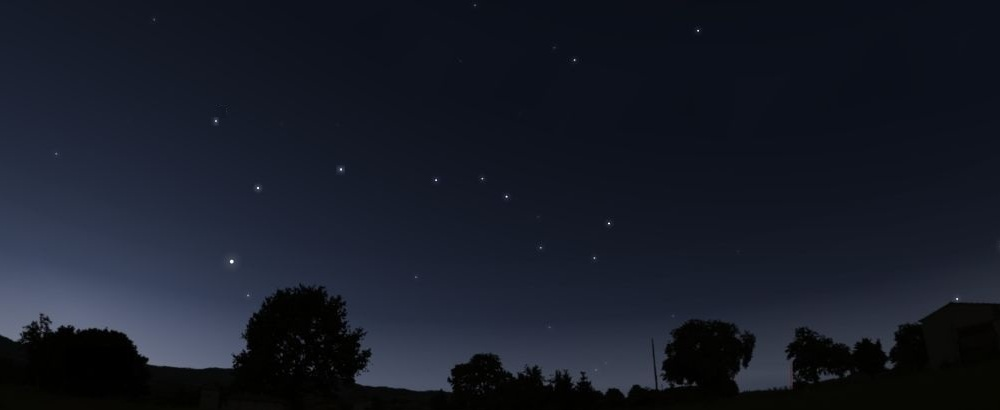

4 Детский альбом 2: Песни (сказочных) героев
4.1 Песня зайца Весельчака
Музыка и слова: ДГ
Я такой прекрасный мастер.
Это правда Я не лгу.
Звери рвут меня на части.
Я любому помогу.
не ведаю я скуки
Я заяц Весельчак
я мастер на все руки
на все дела мастак.
Если стул ваш поломался
Надо вам меня позвать
я приклею его к полу
будет долго он стоять.
Я все могу вам сделать
и спеть и станцевать
и даже молоточком
немного постучать.
Надо ли подрезать ветку
или волосы подстричь -
Очень точно, очень метко
Я могу всего достичь.
И как с афиши лаковой
теперь они стоят
с прической одинаковой
кусты и волосы зверят.
Ну а если покосился
во дворе у вас забор
Вам никто тут не поможет
ни еноты, ни бобер
один лишь я способен
помочь с забором вам
исчезнут все проблемы
и забор изчезнет сам.
У меня гвоздей немало
и пила есть, чтоб пилить
чтоб у вас не поломалось -
я смогу Вам починить
сарай ли для коровы,
поломанный замок,
нет ничего такого
Чего бы я не смог
и морковки мне не надо
ваша радость и ваш смех
будут лучшей мне наградой
за достигнутый успех.
А к вещям вы не привязывайтесь
без них вам будет гораздо легче жить,
а если все же сомневаетесь
Отдайте их мне починить.
Научу я вас секрету,
чтоб вам стало легче жить -
ничего ведь проще нету
Чем счасливыми нам быть.
Ведь что такое счастье
Вам надо лишь понять
Для этого со мною
Давайте повторять
Счастье ведь оно не в том,
В том, что вы имеете,
Счастье ведь оно лишь в том,
В том, что вы умеете!
Одну лишь только букву
нам стоит поменять
Чтобы радостью и смыслом
наполнить жизнь опять!
(Повторять много раз)
2011,20164.2 Песня друзей (Andante-moderato из моего сна)
Музыка: Д. Городничий, Слова: Наталья Афанасьева / Д. Городничий
Под впечатлением прочитывания детской повести https://www.e-reading.club/book.php?book=30104 и поэтического перевода “Хроник Нарнии” http://natalya-afanasyeva.org/.
Listen: backing track and song
Download: backing track (in C) - midi, mp3 , song - mp3
(Голос)
Флейта слышна
От куда-то издалека.
Звук eё, торжественный и немного печальный, зовёт с собой куда-то.
Где-то его уже я слышал наверняка.
Да, это же она - из моего сна
та самая аndante moderato !
(слышeн звук флейты, переходящий в песню)
друг мой,
как я счаслив что ты есть !
с тобой
пройду я сквозь огонь и воду.
ты мне
всегда несёшь благую весть
в дождь и в снег
и в любую непогоду
воды живой
пью дождевой
я за своих друзей
бей барабан
бей барабан
бей барабан ... бей.
песня
дана нам чтобы в трудный час
вместе
объединяла она
победа
нас будет если много нас
а беда
никакая не страшна
песню друзей
верных друзей
не выдержит злодей
бей барабан
бей барабан
бей барабан бей
(проигрышь)
солнце горит
песня летит
и мир становится добрей
бей барабан
бей барабан
бей барабан бей
куда бы
мой конь не отправился,
куда бы
не позвала меня даль,
дружба друзей
никогда не состарится,
дружба друзей
будет лишь крепнуть как сталь.
С другом идти
можно пройти
самые сложные из всех путей,
бей барабан
бей барабан
бей барабан мой бей
Сентябрь 20144.3 Песня из Нарнии (Есть на свете путь добра)
Из поэтического перевода “Хроник Нарнии” http://natalya-afanasyeva.org/. По мотивам повести Клайва Стейплза Льюиса.
Есть на свете много зла.
Я зову Тебя, Аслан !
Ты приходишь сердцем моим завладев,
О, Лев !
Есть на свете путь добра.
Дети, дети, детвора,
Вы конечно услышите этот старинный напев,
О, Лев!
Без движенья, в тишине
Все меняется во мне.
Я проснуться хочу, страшный сон одолев,
О, Лев ! 4.4 Песня пижамной собачки
Музыка и слова: ДГ
собачка дает свои ножки нам
собачка дает свои ручки нам
собачка дает свои пуговички
и свои волшебные очки
и свои волшебные очки
собачка хочет посмотреть в окно
собачка видит за окном темно
собачка на небе видит звездочки
ведь у неё волшебные очки
ведь у неё волшебные очки
собачка может видеть вокруг
собачка - твой и мой хороший друг
и все что увидит она потом
расскажет нам чтоб спалось нам приятным сном
расскажет нам чтоб спалось нам приятным сном
собачка хочет найти кровать
собачка хочет скорее лечь в постель
собачка хочет ручкой помахать
и спокойной ночи пожелать
и спокойной ночи пожелать
20144.5 Песня трех колобков
Жили когда-то / Три веселых брата
Колобюк, Колобяк и Колошмяк
Три веселых брата / Пошли гулять куда-то
Колобюк, Колобяк и Колошмяк.
Колобюк был старше / но совсем не страшный
на любой ответ находил вопрос
Колобяк был средний / Колошмяк был младший
никогда никто из них не вешал нос.
Жили когда-то / три веселых брата
Колобюк, Колобяк и Колошмяк
три веселых брата / решили строить хату
чтобы петь танцевать и просто спать.
Колобюк принес огромную бумагу
чтобы дома нового на ней построить план
Колошмяк порезал на кусочки ее сразу
и получился у них хороший аэроплан
Жили когда-то / три веселых брата
Колобюк, Колобяк и Колошмяк
три веселых брата / могут без зарплаты
работать день, работать ночь, работать год.
nf4.6 Песня рыбака из сказку про Золотую Рыбку
Припев:
Ты моя старуха я твой старик
не шли меня обратно рыбки золотой
(мудростью народной сказка говорит
надо благодарным быть помощи любой )
нужно наслаждаться тем, что есть у нас,
и быть благодарным помощи любой
Да, чего-то нету. Да, могло бы быть.
тяжелее делать, легче говорить
И лишь тот кто может сделать что-то сам
может Если сможет дать советы нам
я тебе построил новую избу
все как ты хотела - створочки в резьбу.
только почему-то недовольна ты
недостаточно тебе в ней красоты
Снова Я пахаю с топором в руке
строю и копаю чтобы угодить тебе
только почему-то кажется опять
Несмотря на все старания тебе будет что сказать
И когда ловлю я рыбу под дождем
мокрый и уставший Как вьючной осел
Ты страдаешь дома от безделия
уже наверно думаешь чего б
слишком много времени стало у тебя
чтоб придумать новые мне задания
чтобы я не сделал чтоб я не принес
Боже, как умело ты воротишь нос
что же, моя милая, с тобой произошло
ведь было все нормально Хоть корыто и текло
А теперь уж Сам я выбился из сил
лучше б то корыто я и не чинил
20124.7 Ригодон (“Я хотел бы узнать как устроен мир”)
Музыка: А. Гедике. Слова: Д. Городничий
Я хотел бы узнать как устроен мир
Почему свет горит и есть тьма
Почему над полями и пустынями
Наступает весна и зима
Я хотел бы летать в небе птицею
Чтобы видеть весь мир с высоты
А не просто двуногой лисицею
Что не видит вокруг красоты
20144.8 Полька (“Капли по крышам”)
Музыка: М. Глинка. Слова: Д. Городничий
Капли по крышам - кап кап
Ножки по лужам - топ топ
Дождик стучит в окно, но-но-но
Но нам с тобой смешно но
Радуга в небе - веселых семь нот
Как улыбка верх ногами песенку поёт
Песня слышна эта в каплях дождя
И её для вас сейчас пропел я
(И её пропела вам сейчас я)
2014 4.9 You Look at Me and You Smile
You look at me and you smile
I look at you and I smile
We get together and smile each other
We get together a-and smile
Your eyes are happy an blue
My eyes are happy but brown
We get together and smile each other
Having multicoloured happy eyes
Your hair is curly and red
I don't have at all
We get together and smile each other,
'Cause we're red-headed bold men
- You are pretty young girl
- You are a handsome young man
We get together and smile each other -
So motley people we are!
4.10 Снова в небе звезды светят (Колыбельная)
Музыка и слова: ДГ
Снова в небе звезды светят
Я засыпаю
Буду спать я всю ночь до рассвета
Я засыпаю
Там где-то всё в далеке сияет -
Стоит лишь глаза закрыть
Там где-то, там по морям, по волнам -
их соткала сна волшебного нить
Ночь на дворе...
Засыпай...
Посмотри как щебечут птицы
И пляшут звери
Ты же знаешь чудо таится
Прямо за дверью
Видишь - вон ласточка в небе видна.
Слышишь - в лесу журчит ручей.
Чувствуешь - Как замечательно нам
в тени этих могучих ветвей.
Мир так прекрасен!
Посмотри!
Завтра солнце встанет рано
и нас разбудит
Воздух наполнится звуками разными
так было и будет
Мы будем бегать и смеяться
мы будем всем дарить тепло
Ну а сейчас надо отсыпаться
Пока солнце еще не взошло
Все спят давно
и мы спим
с тобой...
== Aккорды ==
...
Все спят давно-о
G+
И мы спим
G+ F#+ F+
И мы спим
G#7 C7+9 (or G+/G)
с тобой...–>